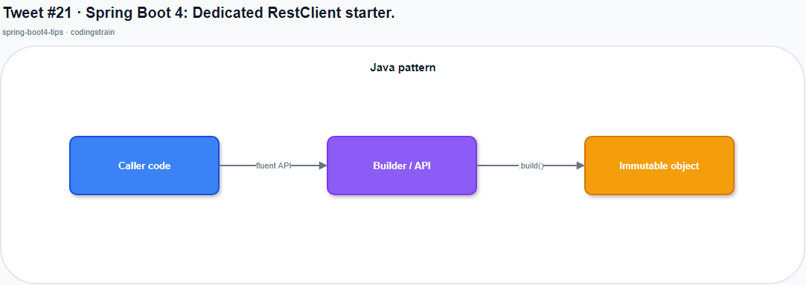

Tweet #21
Architecture — diagrams.net

Code preview
<!-- ❌ Boot 3 style -->
<dependency>
<groupId>org.flywaydb</groupId>
<artifactId>flyway-core</artifactId>
</dependency>
<!-- ✅ Boot 4 -->
<dependency>
<groupId>org.springframework.boot</groupId>
<artifactId>spring-boot-starter-flyway</artifactId>
</dependency>
# application.yml
spring:
flyway:
locations: classpath:db/migrationCopy for X (209/280)